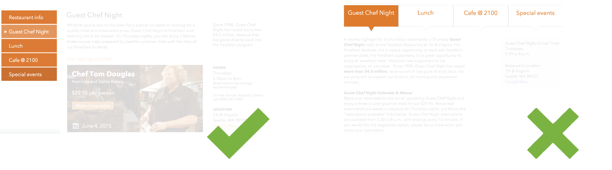
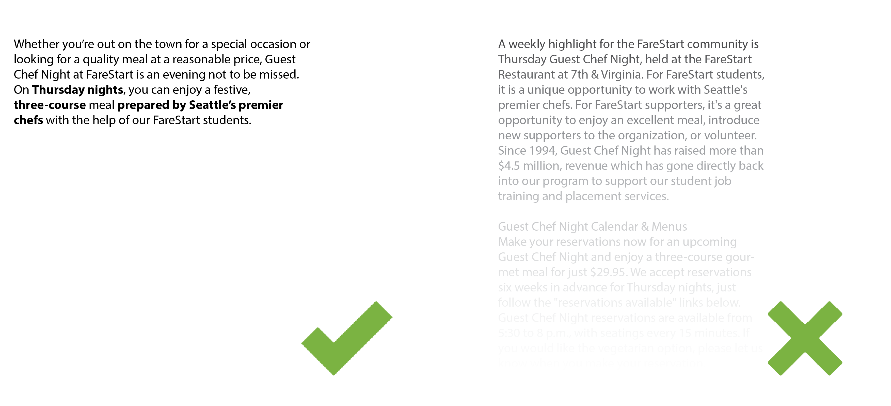
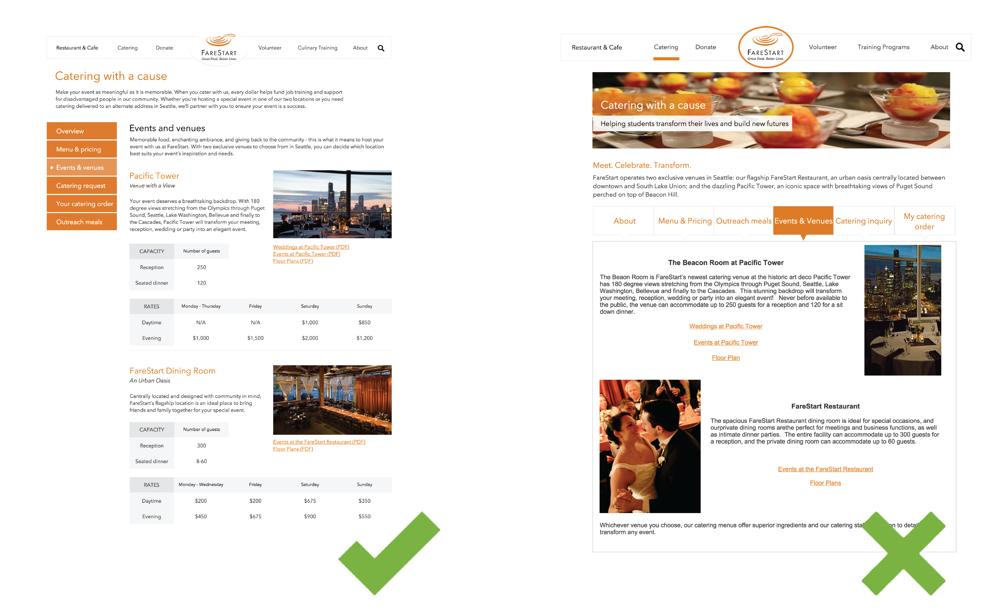

FareStart
Redesign of the website of a non-profit, social organization in Seattle.
UX Designer
03/2015 - 06/2015
3 months
Data Analysis
Wireframing
Prototyping
Card Sorting
Axure
Google Analytics
Optimal Workshop
This is the course project of HCDE537 Web Design. We redesigned the website for FareStart, a non-profit, social organization which has been providing hands-on culinary job training and job placement for homeless and disadvantaged individuals and families in Seattle for over 20 years.
Try final prototype here
Rationale
The FareStart website is a resource for a variety of audiences with independent needs. The current website, designed seven years ago, lacks a few important features including a responsive/mobile-friendly design.
Additionally, content is not always easily discoverable and visitors may be abandoning the site prior to finding the information they were seeking. In order to accurately reflect all that FareStart offers and to continue to grow the FareStart community, a site redesign focused on rearchitecting content based on specific user needs is recommended.
We listed out all the features the current site offered and use Optimal Workshop to have participants do open-end card sorting - grouping these features according to their personal understanding. Then based on this card sorting results we formed a new information architecture.
1. Secondary horizontal navigation bar was not intuitive enough. So we changed to vertical sidebar.
2. Descriptions were wordy. We rewrote the content.
3. It was not visually appealing. We improved the visual design.
Platform: Windows PC
A travel data visualization that helps travelers and investors find their goals.